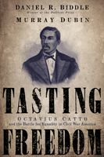

<body bgcolor="#FFFFFF" text="#000000" link="#0000FF" vlink="#CC0000" alink="#CC0000"><center><hr width="350" size="1" align="center" noshade>The life and times of the extraordinary Octavius Catto, and the first civil rights movement in America<hr width="350" size="1" align="center" noshade><p><a href="https://cdcshoppingcart.uchicago.edu/Cart/ChicagoBook.aspx?ISBN=9781592134656&&PRESS=temple" target="_top">Buy this book!</a> | <a href="https://cdcshoppingcart.uchicago.edu/Cart/Cart.aspx?PRESS=temple" target="_top">View Cart</a> | <a href="https://cdcshoppingcart.uchicago.edu/Cart/Cart.aspx?PRESS=temple" target="_top">Check Out</a></p><p></p></center><!--none//--><h1>Tasting Freedom</h1>
<H2>Octavius Catto and the Battle for Equality in Civil War America</H2>
<h3>Daniel R. Biddle and Murray Dubin</h3>
<P>cloth 1-59213-465-3 $35.00, Aug 10, <FONT COLOR=#990033>Available</FONT>
<br>Electronic Book 1-59213-467-X $35.00 <FONT COLOR=#990033>Available</FONT>
<BR> 632 pp
6x9
19&nbsp;halftones
</P><BLOCKQUOTE><I>&quot;Daniel Biddle and Murray Dubin have brought to life a leader of the Civil War-era struggle against slavery and for equal rights for blacks. This dramatic book not only rescues the intrepid Octavius Catto from obscurity but reminds us that this struggle&mdash;and the violent opposition to it&mdash;long predated the modern civil rights era."</I>&mdash;<b>Eric Foner</b>, DeWitt Clinton Professor of History, Columbia University</I></BLOCKQUOTE>
<p>Octavius Valentine Catto was a second baseman on Philadelphia's best black baseball team, a teacher at the city's finest black school, an activist who fought in the state capital and on the streets for equal rights, and an orator who shared the stage with Frederick Douglass. With his murder during an election-day race riot in 1871, the nation lost a civil rights pioneer—one who risked his life a century before the events that took place in Selma and Birmingham. </p>
<p>In <em>Tasting Freedom</em> Daniel Biddle (winner of the Pulitzer Prize) and Murray Dubin painstakingly chronicle the life of this charismatic black leader—a “free” black man whose freedom was in name only. Born in the American South, where slavery permeated everyday life, he moved north, where he joined the fight to be truly free—free to vote, go to school, ride on streetcars, play baseball, and even participate in Fourth of July celebrations.
</p>
<p>Catto electrified a biracial audience in 1864 when he called on free men and women to act and to educate the newly freed slaves, proclaiming, “There must come a change.” With a group of other African Americans who called themselves a “band of brothers,” he challenged one injustice after another. </p>
<p><em>Tasting Freedom</em> presents the little-known stories of Catto and the men and women who struggled to change America. This book will change your understanding of civil rights history.</p>
<BR>&nbsp;<h2>Excerpt</h2><P>Excerpt available at <a href="http://www.temple.edu/tempress">www.temple.edu/tempress</a></p>
<BR>&nbsp;<h2>Reviews</h2>
<p><i>"[A] marvelous historical feast for lovers of Afro-American, Philadelphia, and American history alike.... The book's particular magic is that it shows how real people, black and white, rich and poor, were tossed about in the historical currents that flowed through Philadelphia.... One would have to search far and wide to find a better-researched and more compellingly readable biography."</i> <br>&#151;<b><i><a href="http://www.philly.com/philly/entertainment/literature/20101017_The_black_struggle_for_equality.html" target="_top">The Philadelphia Inquirer</a></i></b>
<p><i>"An entrancing portrait of a leading Renaissance man for equal rights. . . . Nothing matches it at the moment as a prequel to Thomas J. Sugrue’s much-noted </i>Sweet Land of Liberty<i>."</i> <br>&#151;<b><i>Library Journal</i></b>
<p><I>"This is a great story and a compelling history of the original civil rights movement—with its own Dr. King. In </i>Tasting Freedom<i>, Biddle and Dubin bring to light a hero whose footprints helped lead America through the challenges of racial injustice: Octavius Catto. The story is both riveting and elucidative"</I>
<br>&#151<b>Juan Williams</b>, author of <i>Eyes on the Prize</i> and <i>Thurgood Marshall</i>
<p><I>"</i>Tasting Freedom<i> is masterfully researched and cogently written. Biddle and Dubin transport us to yesteryear, profiling some of the central figures of the Civil War era and revealing the birth and rise of the black intelligentsia in this country. </i>Tasting Freedom<i> is a valuable triumph—and a work of importance."</I>
<br>&#151<b>Elijah Anderson</b>, Yale University
<p><I>"</i>Tasting Freedom<i> is required reading for anyone who thinks the civil rights movement started in the 1950s, with Martin Luther King Jr. and Rosa Parks (hint: you're off by a full century). This is a revelation for those of us who grew up being fed morality tales about righteous Northern free staters standing against Southern slaveholders (hint: neither offered real freedom). Biddle and Dubin’s book is for all of us who love a story about baseball and war, about race and the making of America."</I>
<br>&#151<b>Larry Tye</b>, author of <i>Satchel: The Life and Times of an American Legend</i>
<p><I>"If you fancy knowing about growing up black in mid-nineteenth-century Philadelphia, there is no better place to start than with Biddle and Dubin's powerful and poignant biography of Octavius V. Catto. For those who believe that post–Civil War Reconstruction was only a Southern affair, this book is an eye-opener."</I>
<br>&#151<b>Gary B. Nash</b>, Director of the National Center for History in the Schools, UCLA, and author of <i>The Liberty Bell</i>
<p><I>"Biddle and Dubin do a superb job of exploring the complex and fascinating life of forgotten civil rights hero Octavius V. Catto. The research is first-rate and the breadth of coverage is impressive."</I>
<br>&#151<b>Julie Winch</b>, University of Massachusetts Boston
<p><i>"This rich biography...restores Catto to his important place in the pantheon of civil rights heroes."</i><br> &#151;<b><i>ForeWord</i></b>
<p><i>"The book will be a revelation for those who thought the civil rights movement started in Selma and Montgomery, Alabama, with Rosa Parks and Martin Luther King Jr. in the 1950s and 1960s. It would serve well as a text and study guide for a high school or college course in social justice reformation issues in this country."</i> <br>&#151;<b><i>Pennsylvania Magazine</i></b>
<p><i>"This well-executed biography by two Philadelphia journalists gives Octavius Valentine Catto, a 19th-century orator, teacher and baseball hero, his richly deserved place in history."</i><br>&#151;<b><i>Black Issues in Higher Education</i></b>
<p><i>"This book is an encyclopedic epic that both rescues the little-known civil rights activist Octavius V. Catto from relative anonymity and is a seminal study of a range of related topics. This compelling, well-written work chronicles social and political life in America from the antebellum period into the Reconstruction era while focusing on the fascinating, albeit brief, career of Octavius Catto.... This is an entertaining and informative story that uses many previously untapped first-hand accounts. More than a biography of Catto, </i>Tasting Freedom<i> is a sweeping chronicle of the 19th-century civil rights movement and its leaders.... </i>Tasting Freedom<i> is highly recommended for anyone interested in 19th-century American life." </i> <br>&#151;<b><i>The Civil War News</i></b>
<p><i>"Biddle and Dubin have done a commendable job of digging into the elusive records of Catto's life. They present a clear and compelling portrait of this significant early civil rights activist; they also present a thoughtful assessment of how Catto's efforts relate to the modern black civil rights movement. Students, scholars, and the general public will benefit from this study. Summing Up: Recommended."</i> <br>&#151;<b><i>Choice</i></b>
<p><i>"[Octavius Catto] was an extraordinary figure who moved in notable circles; he knew interesting people who did, saw, and said consequential things. Catto’s world is just as if not more compelling than Catto himself, as are many of the other lesser-known characters to whom Biddle and Dubin introduce us....[The authors] are to be commended for taking on such an ambitious task as the recreation of Philadelphia’s free black community and for doing so fearlessly and enthusiastically.... [T]hey have undoubtedly uncovered intriguing material about free blacks in antebellum Philadelphia, and one hopes this will invite further exploration into the lives of Catto, his peers in the City of Brotherly Love, and communities in other northern cities."</i> <br>&#151;<b><i>The American Historical Review</i></b>
<p><i>"This is a densely contextualized life history...Daniel R. Biddle and Murray Dubin skillfully situate their subject at the center of multiple concentric circles.... The authors make this book accessible to a general audience. Stories within stories and on top of stories—sad, frightening, inspirational, infuriating, funny, and poignant—deeply humanize our understanding of everyday life in Philadelphia and the extent to which race inflected daily routines there and other large cities in the Civil War era. The portrait is well researched.... The result is a towering, persuasive narrative that recounts the precarious condition of blacks in nineteenth-century Philadelphia."</i><br>&#151;<b><i>The Journal of American History</i></b>
<p><i>"In </i>Tasting Freedom<i>, Biddle and Murray seek not only to recover the life of the martyred Catto but also to tell the story of 'the first civil rights movement' in the city of Philadelphia.... Biddle and Dubin have done yeoman’s work in recovering his story from a scattered evidentiary base and bringing it to life in vivid, and often moving, prose.... Most powerful of all is the authors’ reconstruction of the 1871 Election Day riots during which a white political thug gunned down Catto in broad daylight.... [I]t is clear why the authors find Catto so compelling; one of the great achievements of their work is that it communicates to the modern reader what was obvious to Catto’s contemporaries: the man’s brilliance and charisma. This is a book that will reward both general and scholarly readers."</i> <br>&#151;<b><i>The Pennsylvania Magazine of History and Biography</i></b>
<p><i>"In their hefty biography of Octavius Catto, journalists Dan Biddle and Murray Dubin intended, in their own words, to spin 'a good yarn.' They have succeeded.... [They] have done superb sleuth work here, excavating what little there is to know about Octavius Catto.... [T]he result is a lively biography of a little-known leader of the civil-rights movement in the years following the Civil War.... </i>Tasting Freedom<i> offers readers a nuanced and multi-layered portrait of Philadelphia during the Reconstruction era."</i> <br>&#151;<b><i>Commonwealth: A Journal of Political Science</i></b>
<p><i>"In this groundbreaking work, authors Daniel R. Biddle and Murray Dubin argue that a civil rights movement occurred in the United States nearly a century before Martin Luther King Jr. and Rosa Parks. By examining the life of Octavius Catto, a free African American man who led an extraordinary life as an educator, activist, and baseball player in Civil War–era Philadelphia, Biddle and Dubin seek to highlight the understudied history of African American activism during the time period. The authors possess an ability to narrate history on a personal, detailed level that allows the reader a vibrant glimpse into what life would have been like for mid-19th century Philadelphians, block by block and day by day. Thoroughly debunking any misconception that free African Americans were considered full citizens or treated as equals by their white countrymen in the North, </i>Tasting Freedom<i> reshapes the reader’s understanding of American history by highlighting the agency of African Americans who worked to attain equal citizenship in the United States before,during, and after the Civil War."</i> <br>&#151;<b><i>Pennsylvania Legacies</i></b>
<BR>&nbsp;<P><p>Visit the author's website: <a href="http://tastingfreedombook.com/" target="new">tastingfreedombook.com</a>.</p></P><BR>&nbsp;<br>
<h2>Contents</h2><P>
<p>Preface
<br>Introduction “A Hundred O. V. Cattos”
<br>1. Charleston
<br>2. Arm in Arm
<br>3. “Keep the Flame Burning . . .”
<br>4. With Giants
<br>5. Lessons
<br>6. The Irish, the Killers, and Squire McMullen
<br>7. “Arise, Young North”
<br>8. How Much I Yearn to Be a <i>Man</i>”
<br>9. A Chance on the Pavement
<br>10. The Wolf Killers
<br>11. Manhood
<br>12. The Battle for the Streetcars
<br>13. Baseball
<br>14. The Hide of the Rhinoceros
<br>15. Election Day
<br>16. The Venus of the High Trapeze
<br>Epilogue The Legacy
<br>Acknowledgments
<br>Notes
<br>Bibliography
<br>Index
</P><BR>&nbsp;<H2>About the Author(s)</H2>
<table><tr><td valign="top"><img src="/tempress/authors/1839_au1.gif" height="90" width="75"></td><td width="100%" valign="middle"><p><b>Daniel R. Biddle</b>,<em>The Philadelphia Inquirer</em>'s Politics editor, has worked in nearly every phase of newspaper reporting and editing. His investigative stories on the courts won a Pulitzer Prize and other national awards. He has been a Nieman Fellow at Harvard University and has taught at the University of Pennsylvania. He and his wife, Cynthia Roberts, live in Philadelphia.</P></td></tr></table><table><tr><td valign="top"><img src="/tempress/authors/1839_au2.gif" height="90" width="75"></td><td width="100%" valign="middle"><p><b>Murray Dubin</b>, author of <em>South Philadelphia: Mummers, Memories and the Melrose Diner</em>, was a reporter and editor at <em>The Philadelphia Inquirer</em> for 34 years before leaving the newspaper in 2005. He lives in Philadelphia with his wife, Libby Rosof.</P></td></tr></table>
<BR><H2>Subject Categories</H2>
<p><A HREF="/tempress/biography.html" TARGET="_top">Biography/Memoir/Autobiography</a>
<BR><A HREF="/tempress/history.html" TARGET="_top">History</a>
<BR><A HREF="/tempress/african.html" TARGET="_top">African American Studies</a>
</p>
<p align="center"><a href="https://cdcshoppingcart.uchicago.edu/Cart/ChicagoBook.aspx?ISBN=9781592134656&&PRESS=temple" target="_top">Buy this book!</a> | <a href="https://cdcshoppingcart.uchicago.edu/Cart/Cart.aspx?PRESS=temple" target="_top">View Cart</a> | <a href="https://cdcshoppingcart.uchicago.edu/Cart/Cart.aspx?PRESS=temple" target="_top">Check Out</a></p><p><font face="Arial" size="1"><a href="copyright.html" onMouseOver="window.status='Web Copyright Policy';return true;" onMouseOut="window.status=''" title="Web Copyright Policy">&copy;</a> 2016 <a href="http://www.temple.edu" target="new" onMouseOver="window.status='Link to Temple University home page';return true;" onMouseOut="window.status=''" title="Link to Temple University home page">Temple University</a>. All Rights Reserved. http://www.temple.edu/tempress/titles/1839_reg.html</font></p>